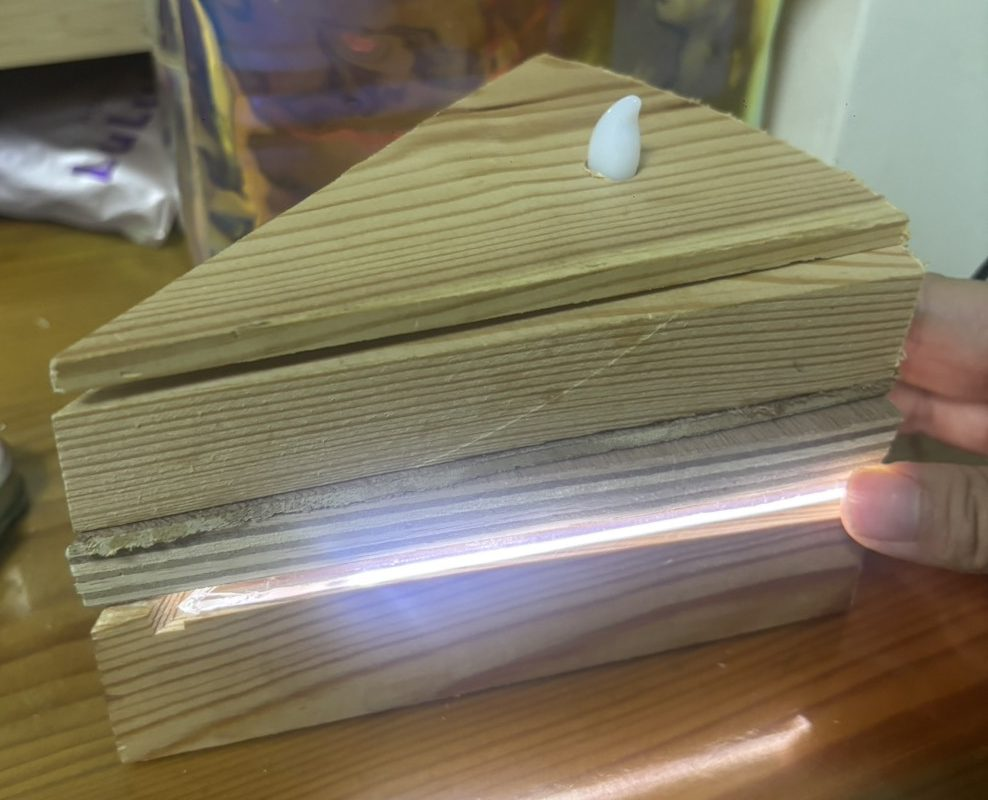
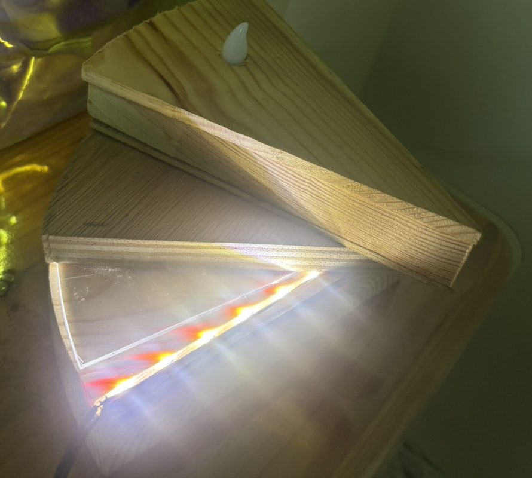
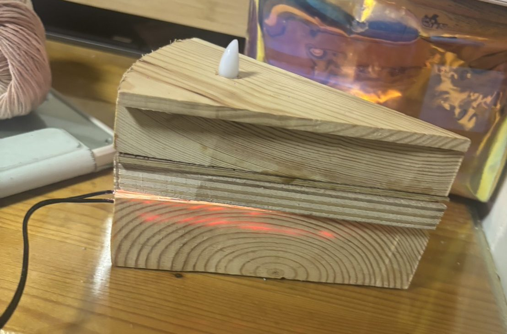

一開始就決定要做一塊切好的蛋糕：實木與夾板一層層疊起來，像蛋糕的海綿與夾心，頂端插著一根小蠟燭。每一層都打了孔，插進竹筷當作轉軸，讓上層可以像扇子一樣旋轉打開。
花最多時間設計的是燈條要藏在哪裡。我希望使用者轉開蛋糕的那一刻會有一點驚喜，所以把燈條藏進內部，蓋著的時候只從夾縫透出一點微光；轉開之後，光才從切面整片亮起來，像切開蛋糕時露出的內餡。


一塊切好的蛋糕，轉開上層的那一刻，光才從夾層裡亮起來。

一開始就決定要做一塊切好的蛋糕：實木與夾板一層層疊起來，像蛋糕的海綿與夾心，頂端插著一根小蠟燭。每一層都打了孔，插進竹筷當作轉軸，讓上層可以像扇子一樣旋轉打開。
花最多時間設計的是燈條要藏在哪裡。我希望使用者轉開蛋糕的那一刻會有一點驚喜，所以把燈條藏進內部，蓋著的時候只從夾縫透出一點微光；轉開之後，光才從切面整片亮起來，像切開蛋糕時露出的內餡。

